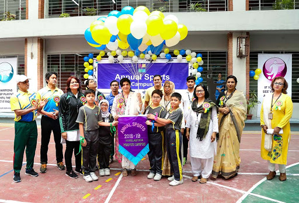
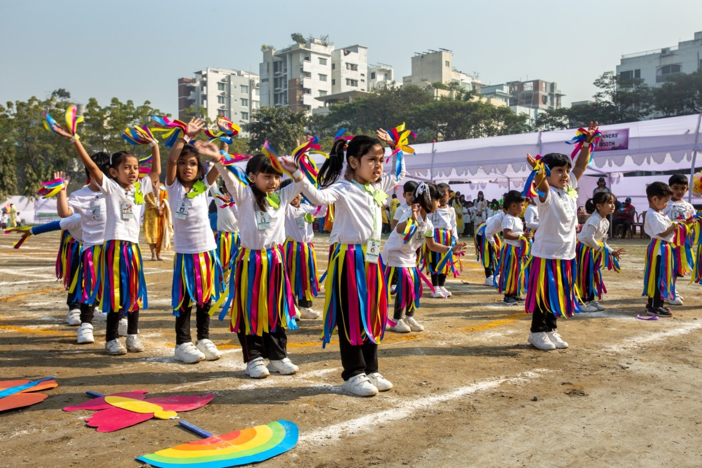

Scholastica's mission is to develop curious, knowledgeable and caring young individuals, who will be equipped to tackle head-on the challenges of our modern-day "global village." They will aspire to become responsible and productive citizens, who will contribute to their communities, and embrace and respect people from other cultures and walks of life.
Scholastica was established in 1977 by Mrs. Yasmeen Murshed. It was founded to provide a balanced and well-rounded education for students, using English as the primary medium of instruction but placing equal emphasis on Bangla.
The customized curriculum builds the knowledge, skills and attitudes that students need to succeed in their academic and professional careers after school. Students are encouraged to challenge themselves, their peers and their teachers in a setting that gives them confidence and builds their skills to think independently.
The admissions process in Scholastica is very transparent. Anyone is welcome to apply without any reference. Absolutely no donations are accepted; only published fees are required.
During the admissions process, interviews are held by a panel of senior management, not a single individual. The interview panel is a team of qualified individuals from Scholastica's senior management. All decisions for admission are made through a committee, not by any one individual.
No external agents/agencies are appointed or involved in the admissions process; the Admissions Office is the only point of contact for all admissions-related inquiries. No Ascent Group personnel have a role in the admissions process except those in the Admissions Office and on the interview and selection panel.
Students gets scholarship on the basis of their academic performance. If a student get A+ in all subjects he will get 50% scholarship. It is calculated by their class text, mideterm and final result. Every class has scholarship opportunities for students.
There are indoor and outdoor game place for students. Here they can play football, basket ball, table tennis, badminton etc. Yearly annual sport competition are held twice. Every students are part of it. There are drama, debate, singing, dancing competetion also.

For queries regarding admission or to set up a campus tour, please contact:
Admissions Department:
Telephone: (0088) 01755630141.
Email: admissions@scholasticabd.com